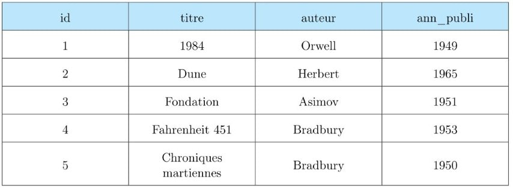

Les bases de données⚓︎
Programme
| Notions | Compétences | Remarques |
|---|---|---|
| Modèle relationnel : relation, attribut, domaine, clef primaire, clef étrangère, schéma relationnel. | Identifier les concepts définissant le modèle relationnel. | Ces concepts permettent d’exprimer les contraintes d’intégrité (domaine, relation et référence). |
| Base de données relationnelle. | Savoir distinguer la structure d’une base de données de son contenu. Repérer des anomalies dans le schéma d’une base de données. |
La structure est un ensemble de schémas relationnels qui respecte les contraintes du modèle relationnel. Les anomalies peuvent être des redondances de données ou des anomalies d’insertion, de suppression, de mise à jour. On privilégie la manipulation de données nombreuses et réalistes. |
| Système de gestion de bases de données relationnelles. | Identifier les services rendus par un système de gestion de bases de données relationnelles : persistance des données, gestion des accès concurrents, efficacité de traitement des requêtes, sécurisation des accès. | Il s’agit de comprendre le rôle et les enjeux des différents services sans en détailler le fonctionnement. |
Introduction : limite du traitement des données⚓︎
Faire l'activité Indexation des ouvrages d'une bibliothèque sur Capytale avec le code : 3793-623224
Correction
Code Capytale : 4365-623221
Faire l'activité Manipuler des données avec une table sur Capytale avec le code : 1e7e-623230
Correction
Code Capytale : ead9-623227
Le modèle relationnel⚓︎
Un peu d'histoire⚓︎
Le modèle relationnel est une manière de modéliser les relations existantes entre plusieurs informations, et de les ordonner entre elles. Cette modélisation qui repose sur des principes mathématiques mis en avant par E.F. Codd (laboratoire de recherche d’IBM) est souvent implémentée dans une base de données.
| 1970 | Edgar Franck Cood pose les bases du modèle relationnel |
| 1974 | Création du langage SQL |
| 1979 | Création du premier système de gestin de base de données Oracle |
| 1980 | Le volume mondial de données stockées est estimé à \(10^{18}\) octets |
| 1990 | Le volume mondial de données stockées est estimé à \(10^{19}\) octets |
| 1995 | Première version du langage MySQL |
| 2002 | Le volume mondial de données stockées est estimé à \(10^{20}\) octets |
| 2010 | Le volume mondial de données stockées est estimé à \(10^{21}\) octets |
| 2014 | Le volume mondial de données stockés est estimé à \(10^{22}\) octets |
Les limites des outils traditionnels⚓︎
L'exemple de la médiathèque⚓︎
Prenons l’exemple d’une médiathèque. Elle souhaite recenser les ouvrages qu’elle possède. Voici le tableau qu’elle a réalisé.

Exercice 6
- Identifiez les redondances dans ce tableau, et les éléments qui semblent uniques.
- Le livre de Ray Bradbury intitulé « Chroniques martiennes » est régulièrement indisponible car il est trop souvent emprunté. La médiathèque achète donc un deuxième exemplaire, paru chez le même éditeur. Il portera le numéro d’inventaire 236984. Complétez le tableau avec ce nouvel ouvrage.
- Existe-t-il un élément unique qui va référencer totalement l’ouvrage?
- La médiathèque s’ouvre depuis peu à la bande dessinée. Elle souhaite enregistrer l’album de bande dessinée en langue française L’incal noir , scénarisé par Alejandro Jodorowsky , dessiné par Moebius et édité par Les humanoïdes associés en 1982 . Quel est (sont) le(s) problème(s) rencontré(s)?
Correction
- Redondances :
- nom auteur (par ex : Bradbury)
- prenom auteur (par ex : George)
- editeur (par ex : Pocket)
- langue (par ex : anglais)
- annee publication (par ex : 1968) Eléments uniques :
- titre
- reference
- On rajouter la ligne : Chroniques martiennes, Bradbury, Ray, Denoël, anglais, 1950, 236984
- La référence est un élément unique qui référencera totalement un ouvrage.
- Il n’y a pas qu’un seul auteur, alors qu’il n’y a qu’une colonne pour cela...
Notion de base de données⚓︎
Une donnée est une information représentée sous une forme conventionnelle, afin de pouvoir être traitée automatiquement. Une base de données (BDD) représente un ensemble ordonné de données dont l’organisation est régie par un modèle.
Les données sont généralement regroupées selon leur appartenance à un objet du monde réel.
- Le regroupement d’objets homogènes constitue une entité .
- Une entité est décrite par un ensemble d’ attributs .
- Chacun de ces attributs prend une valeur pour chaque objet.
Exemple 1
- Entité : un être humain
- Attributs : nom, prénom, date de naissance, lieu de naissance
- Valeurs : Young, Neil, 12 novembre 1945, Toronto
Exercice 7
On souhaite représenter les données issues de la carte nationale d’identité. À partir de votre carte personnelle, donnez le nom de l’entité correspondante, les attributs qui lui sont associés et les valeurs qui vous sont propres.
Correction
Entité : Français
Attributs : nom, prénom, sexe, date de naissance, lieu de naissance, taille, adresse, date de validité, date de livraison, prefecture
Valeurs : ...
Le modèle relationnel⚓︎
Vous pourrez visionnez cette video :
Les principes de base⚓︎
Un des modèles de données le plus courant est le modèle relationnel. Les principes de base de ce modèle sont les suivants :
- séparer les données dans plusieurs tables
- chaque table contient des données relatives à un même sujet
- on évite la redondance des données
- on ne stocke pas des données qui peuvent être calculées (exemple : une ligne Total)
- mettre les tables en relation par l’utilisation de clés
- clés primaires : leurs valeurs (souvent des entiers) permettent d’identifier une donnée de manière unique
- clés étrangères : elles référencent une clé primaire d’une autre table
Un exemple : le bon de commande⚓︎
La société Le Coin, située à Caen, a commandé des produits chimiques à la société BonPrixChim.
Le bon de commande est indiqué ci-dessous :
À partir de ce bon de commande, on peut séparer les informations en 3 entités :
- une entité commande qui va regrouper les données de la commande;
- une entité client qui va regrouper les données du client;
- une entité produits qui va regrouper les données d’un détail.
Exercice 8
- Établissez, pour chaque entité, la liste des attributs.
- Représentez chaque entité par une table contenant les attributs et la liste de leurs valeurs.
- Pensez-vous qu’il y ait des redondances? S’il y en a, modifiez les tables pour les supprimer.
- En réalité, la table Produits n’est pas pertinente. Elle ne devrait contenir que les informations associées à un produit. Quels seraient ses attributs?
- Construisez une quatrième table intitulé Details reprenant les attributs manquants.
- Comment éditera-t-on le bon de commande?
Correction
1)
Entité : Commande
Attributs : numéro de commande, date
Entité : Client
Attributs : numéro de client, nom, adresse, ville
Entité : Produits
Attributs : référence, libellé, prix, quantité
2) Commandes
| Numéro de commande | Date |
|---|---|
| 14010 | 24/09/2014 |
Clients
| Numéro de client | Nom | Adresse | Ville |
|---|---|---|---|
| BD2014 | LECOIN | 24 RUE SAINT-JEAN | CAEN |
Produits
| Référence | Libellé | Prix | Quantité |
|---|---|---|---|
| 190464K | Calcium chlorure 1 mol/l | 77 | 10 |
| 31535.292 | Sodium chlorure 1 mol/l | 105 | 15 |
| 30024.290 | Acide chlorhydrique 1 mol/l (1 N) | 41 | 3 |
| 30917.320 | Iode 0,05 mol/l (0,1 N) | 117 | 8 |
3) Non
4) Référence, Libellé, et Pris
5) Détails : Référence et Quantités
6) Il faudra faire des liens entre les tables.
Il y aura un problème du fait de l’absence de l’attribut numero commande
dans la table Details et de l’absence de l’attribut numero client dans la table Commande)
Définition⚓︎
Définition
Une relation (on parle aussi de table) est composée d’un en-tête (le libellé des attributs ) et d’un corps composé d’un ou plusieurs t-uplets (on parle aussi d’enregistrement).

Domaine de valeurs d'un attribut⚓︎
Chaque valeur possède un type et un ensemble fini ou non des valeurs possibles. Cela constitue le domaine de valeurs d’un attribut.
Exemple 2
- L’attribut idAuteur de la relation Auteurs est un entier positif. Son type est entier . Le domaine de valeur correspond à tous les entiers de 0 à \(+\infty\) .
- L’attribut titre de la relation Livres est une chaîne de caractères. Son type est chaîne de caractères . Le domaine de valeur correspond à toutes les chaînes de caractères .
Exercice 9
Déterminez le domaine de valeurs des attributs de la relation Produits .
| reference | libelle | prix |
|---|---|---|
| 1900464K | Calcium chlorure 1 mol/L | 77 |
| 31535.292 | Sodium chlorure 1 mol/L (1N) | 105 |
| 30024.290 | Acide chlorhydrique 1 mol/L (1N) | 41 |
| 30917.320 | Iode 0,05 mol/L (0,1 N) | 936 |
Correction
- Domaine de valeur de :
- reference : toutes les chaînes de caractères
- libelle : toutes les chaînes de caractères
- prix : tout réel supérieur strict à 0
Notion de clé primaire⚓︎
À l’intérieur d’une relation, deux t-uplets identiques ne sont pas autorisés. Il faut pouvoir identifier de façon unique un t-uplet.
Définition
Une clé primaire permet d’identifier un t-uplet de manière unique.
Il faut déterminer, parmi les attributs, lequel permet d’identifier de manière unique un t-uplet.
Cet attribut sera considéré comme la clé primaire de la relation.
Dans la figure précédente :
- L’attribut auteur ne peut pas jouer le rôle de clé primaire (deux ouvrages pouvant avoir le même auteur).
- De même pour les attributs titre et annPubli .
- Il reste donc l’attribut idLivre (pour identifiant), qui a été ajouté ici pour jouer le rôle de clé primaire.
Remarque
Ici, nous avons créé artificiellement une clé primaire, car aucun des autres attributs ne pouvait convenir (ce n’est pas toujours le cas).
Clé étrangère⚓︎
Dans la relation Auteurs , chaque auteur est identifié par l’attribut idAuteur (clé primaire de la relation).
Dans la relation Livres , on a rajouté un attribut idAuteur qui est la clé primaire de la relation Auteurs .
Définition
Une clé étrangère référence une clé primaire d’une autre table.
L’attribut idAuteur est ce que l’on nomme une clé étrangère de la relation Livres , elle permet de faire le lien entre les deux relations.
Remarque
Il peut y avoir plusieurs clés étrangères dans une relation.
Exercice 10
- Reprenez les relations de l’exercice 8 , en identifiant une clé primaire pour chacune des tables, ou en en introduisant une si elle n’existe pas.
- Justifiez que dans la relation Details , les attributs reference et numero commande ne peuvent pas constituer individuellement une clé primaire.
- Justifiez que dans la relation Details , le couple (reference, numero commande) constitue une clé primaire.
- Identifiez les clés étrangères.
Correction
- Commande : Numéro de commande
Client : Numéro de client
Produit : Référence
Détail : Référence, numero de commande - Pour une même quantité, il peut y avoir différentes références et différents numéros de commande
- Pour avoir l’unicité du détail d’un produit, il faut connaître la référence ET le numéro de commande .
- Clé étrangère : numéro client, référence et numéro de commande
Représentation du modèle relationnel⚓︎
Le schéma d’une relation définit cette relation. Il est composé :
- du nom de la relation (on la place en tête, et en gras),
- de la liste de ses attributs avec les domaines respectifs dans lesquels ils prennent leurs valeurs (cette liste est placée entre parenthèses),
- de la clé primaire (elle est soulignée),
- des clés étrangères (on place un # entre la clé étrangère et la référence),
- des autres valeurs.
L’ensemble des relations peut être représenté soit par un schéma, soit par une notation textuelle.
Exemple : notation textuelle
Livres (idLivre, titre, idAuteur # Auteurs(idAuteur), annPubli)
Auteurs (idAuteur, nom, prenom, langueEcriture)
Exemple : schéma relationnel

Exercice 11
Les relations de l'exercice 8 sont représentées ci-dessous :

Les clés primaires et étrangères ont été définies à l’exercice 10.
- Écrivez la notation textuelle du modèle relationnel.
- Réalisez le schéma relationnel.
Correction
Commande : (Numéro de commande, # numéro client, date)
Client : (Numéro de client, nom, adresse, ville)
Produit : (Référence, libelle, prix)
Détail : (# Référence, # numero de commande, quantite)

Les contraintes d'intégrité⚓︎
Il est important d’assurer la cohérence et donc l’intégrité des données présentes dans une base de données. Cela consiste à s’assurer que les données stockées sont cohérentes entre elles, c’est à dire qu’elles respectent toutes les règles exigées par le concepteur de la base de données. C’est une assertion vérifiée par les données de la base, à tout moment.
Définition
Une contrainte d’intégrité est une règle appliquée à un attribut ou une relation et qui doit toujours être vérifié.
Les contraintes d’intégrité sont vérifiées par le système de gestion des bases de données (SGBD).
Si l’une des règle n’est pas respectée, le SGBD signalera cette erreur et n’autorisera pas l’écriture de cette nouvelle donnée.
La contrainte de domaine⚓︎
Définition
Chaque attribut doit prendre une valeur dans son domaine de valeurs.
Exemple
- La note obtenue dans une matière doit être comprise entre 0 et 20;
- la quantité commandée est obligatoire ET doit être strictement supérieure à 0.
La contrainte de relation⚓︎
Définition
Chaque relation dans le modèle relationnel est identifiée par une clé primaire qui doit être unique et non nulle . Donc, chaque t-uplet est également identifié par une clé primaire.
La contrainte de référence⚓︎
Définition
Une clé étrangère dans une relation doit être une clé primaire dans une autre. De plus, le domaine de valeurs de ces deux clés doit être identique. Enfin, la valeur d’une clé étrangère doit exister dans la clé primaire qui y fait référence.
Exemple
Dans la figure ci-dessous, la valeur de la clé étrangère idAuteur ne peut pas être supérieure à 8.

Exercices⚓︎
Exercice 12
Dans l’exemple de la Médiathèque, on souhaite créer 3 relations :
- Auteur , contenant toutes les informations sur un auteur
- Livre , contenant toutes les informations sur un livre
- Ouvrage , contenant toutes les informations sur un ouvrage disponible à l’emprunt.
- Pour chacune des relations, indiquez les attributs avec leur type et leur domaine de valeurs.
- Pour chacune des relations, indiquez la clé primaire et éventuellement la ou les clé(s) étrangère(s).
- Représentez le schéma relationnel correspondant, ainsi que la notation textuelle qui lui est associée.
Correction
1) 2) 3)
Auteur(idAuteur, nomAuteur, prenomAuteur,langue)
Livre(idLivre,titre,#idAuteur,annee)
Ouvrage(#idLivre,quantité)
Domaine de valeur : - idAuteur, idLivre : nombre entier strictement positif - nomAuteur, prenomAuteur, langue, titre, annee : toute chaîne de caractères - quantité : nombre entier positif ou nul
3) ...
Exercice 13
Un laboratoire souhaite gérer les médicaments qu’il conçoit :
- Un médicament est décrit par un nom, qui permet de l’identifier. En effet il n’existe pas deux médicaments avec le même nom.
- Un médicament comporte une description courte en français, ainsi qu’une description longue en latin.
- On gère aussi le conditionnement du médicament, c’est à dire le nombre de pilules par boîte (qui est un nombre entier).
- À chaque médicament on associe une liste de contre-indications, généralement plusieurs, parfois aucune.
- Une contre-indication comporte un code unique qui l’identifie, ainsi qu’une description.
- Une contre-indication est toujours associée à un et un seul médicament.
Voici deux exemples de données :
-
Le Chourix a pour description courte « Médicament contre la chute des choux » et pour description longue « Vivamus fermentum semper porta. Nunc diam velit, adipiscing ut tristique vitae, sagittis vel odio. Maecenas convallis ullamcorper ultricies. Curabitur ornare. ». Il est conditionné en boîte de 13.
Ses contre-indications sont : -
CI1 : Ne jamais prendre après minuit.
-
CI2 : Ne jamais mettre en contact avec de l’eau.
-
Le Tropas a pour description courte « Médicament contre les dysfonctionnements intellectuels » et pour description longue « Suspendisse lectus leo, consectetur in tempor sit amet, placerat quis neque. Etiam luctus porttitor lorem, sed suscipit est rutrum non. ». Il est conditionné en boîte de 42.
Ses contre-indications sont : -
CI3 : Garder à l’abri de la lumière du soleil.
- Donnez la représentation sous forme de tables des relations Medicament et ContreIndication .
- Écrivez le schéma relationnel permettant de représenter une base de données pour ce laboratoire.
Correction
1)
Médicament
| nomMedicament | descriptionCourte | descriptionLongue | quantite |
|---|---|---|---|
| Chourix | Médicament contre la chute des choux | Vivamus fermentum semper porta. Nunc diam velit, adipiscing ut tristique vitae, sagittis vel odio. Maecenas convallis ullamcorper ultricies. Curabitur ornare. | 13 |
| Tropas | Médicament contre les dysfonctionnements intellectuels | Suspendisse lectus leo, consectetur in tempor sit amet, placerat quis neque. Etiam luctus porttitor lorem, sed suscipit est rutrum non | 42 |
ContreIndication :
| idCi | nomMedicament | descriptionCI |
|---|---|---|
| CI1 | Chourix | Ne jamais prendre après minuit |
| CI2 | Chourix | Ne jamais mettre en contact avec de l’eau |
| CI3 | Tropas | Garder à l’abri de la lumière du soleil |
2)
Medicament(nomMedicament, descriptionCourte, descriptionLongue, quantite)
ContreIndication(idCI, # nomMedicament, descriptionCI)
- Domaine de valeur :
- nomMedicament, descriptionsCI,descriptionCourte : chaine de caractère en français
- descriptionLongue : chaine de caractère en latin
- idCI , quantite : entier strictement positif
Les systèmes de gestion de base de données (SGBD)⚓︎
Un peu d'histoire⚓︎
| 1960 | développement de l’IMS (Information Management System) par la société IBM dans le cadre du programme Apollo. |
| 1979 | création du premier SGBD Oracle |
| 1995 | première version de MySQL |
Définition⚓︎
Définition
Un Système de Gestion de Base de Données est un outil permettant aux utilisateurs de structurer, d’insérer, de modifier et de rechercher de manière efficace des données au sein d’une grande quantité d’informations stockées sur des mémoires partagées.

Propriétés⚓︎
Les SGBD permettent de gérer la lecture, l’écriture ou la modification des informations contenues dans une base de données.
- elles permettent de gérer les autorisations d’accès à une base de données. Il est en effet souvent nécessaire de contrôler les accès par exemple en permettant à l’utilisateur A de lire et d’écrire dans la base de données alors que l’utilisateur B aura uniquement la possibilité de lire les informations contenues dans cette même base de données. Les accès sont ainsi sécurisés.
- les fichiers des bases de données sont stockés sur des disques durs dans des ordinateurs, ces ordinateurs peuvent subir des pannes. Il est souvent nécessaire que l’accès aux informations contenues dans une base de données soit maintenu, même en cas de panne matérielle. Les bases de données sont donc dupliquées sur plusieurs ordinateurs afin qu’en cas de panne d’un ordinateur A, un ordinateur B contenant une copie de la base de données présente dans A, puisse prendre le relais. Tout cela est très complexe à gérer, en effet toute modification de la base de données présente sur l’ordinateur A doit entraîner la même modification de la base de données présente sur l’ordinateur B. Cette synchronisation entre A et B doit se faire le plus rapidement possible, il est fondamental d’avoir des copies parfaitement identiques en permanence. C’est aussi les SGBD qui assurent la maintenance des différentes copies de la base de données. On parle de persistance des données.
- plusieurs personnes peuvent avoir besoin d’accéder aux informations contenues dans une base données en même temps. Cela peut parfois poser problème, notamment si les 2 personnes désirent modifier la même donnée au même moment (on parle d’accès concurrent).
Ces problèmes d’accès concurrent sont aussi gérés par les SGBD.
L’utilisation des SGBD explique en partie la supériorité de l’utilisation des bases de données sur des solutions plus simples à mettre en oeuvre; mais aussi beaucoup plus limitées comme les fichiers au format CSV.
L’interaction avec le SGBD se fait par l’intermédiaire de requêtes exprimées dans un langage devenu standard au fil des temps : le langage SQL (Structured Query Language).
A Retenir
Un système de gestion de base de données doit pouvoir :
- décrire les données, indépendamment des applications;
- manipuler les données : dire QUOI sans dire COMMENT;
- contrôler les données pour s’assurer de leur intégrité ou qu’elles vérifient les contraintes;
- partager les données entre plusieurs utilisateurs;
- sécuriser les données (reprise après panne, journalisation).
Le langage SQL⚓︎
Les requêtes d'interrogation⚓︎
Construction d'une requête simple⚓︎
Le langage SQL (Strutured Query Language) permet d’interroger les bases de données en traduisant les opérations par des mots-clés simples. C’est un langage normalisé.
Remarque
Le langage SQL n’est pas sensible à la casse. néanmoins, il est coutumier d’écrire les mots-clés en majuscule.
Définition
L’instruction de base pour l’interrogation d’une base de données en SQL est constituée du mot-clé SELECT suivi du mot-clé FROM.
SELECTpermet de sélectionner les attributs dont il faut afficher les valeurs. Le caractère \(*\) permet d’afficher les valeurs de tous les attributs.FROMpermet de sélectionner la relation à explorer.
Une requête SQL finit toujours par un point-virgule ;
Exemple
On considère la relation LIVRES ( id , titre, auteur, ann_publi)

Elle contient les éléments suivants :

- Affichage de tous les titres présents dans la relation LIVRES
SELECT titre
FROM livres;
1984
Dune
Fondation
Farenheit 451
Chroniques martiennes
- Affichage de tous les titres et années de publication présents dans la relation LIVRES
SELECT titre, ann_publi
FROM livres;
1984, 1949
Dune, 1965
Fondation, 1951
Farenheit 451, 1953
Chroniques martiennes, 1950
- Affichage de tous les attributs présents dans la relation LIVRES
SELECT *
FROM livres;
renvoie l’affichage :
1, 1984, Orwel, 1949
2, Dune, Herbert, 1965
3, Fondation, Asimov, 1951
4, Farenheit 451, Bradbury 1953
5, Chroniques martiennes, Bradbury, 1950
Définition
Le mot-clé DISTINCT permet d’éviter l’affichage de doublons.
Exemple
- Affichage de tous les auteurs dans la relation LIVRES
SELECT auteur
FROM livres;
renvoie l’affichage :
Orwell
Herbert
Asimov
Bradbury
Bradbury
- Affichage de tous les auteurs dans la relation LIVRES sans les doublons
SELECT DISTINCT auteur
FROM livres;
renvoie l’affichage :
Orwell
Herbert
Asimov
Bradbury
Définition
Le mot-clé ORDER BY permet de trier les résultats par ordre croissant.
Pour trier par ordre décroissant, il faut ajouter l’option DESC.
Exemple
- Affichage de tous les auteurs et titre dans la relation LIVRES par ordre croissant de l’attribut auteur
SELECT titre, auteur
FROM livres
ORDER BY auteur;
renvoie l’affichage :
Fondation, Asimov
Farenheit 451, Bradbury
Chroniques martiennes, Bradbury
Dune, Herbert
1984, Orwell
- Affichage de tous les auteurs et titre dans la relation LIVRES par ordre décroissant de l’attribut ann_publi
SELECT DISTINCT auteur, titre
FROM livres
ORDER BY ann_publi DESC;
renvoie l’affichage :
Dune, Herbert
Chroniques martiennes, Bradbury
Fondation, Asimov
Farenheit 451, Bradbury
1984, Orwell
Exercice 14
On considère la relation COMMUNES dont une partie du contenu est représenté ci-dessous :
- Quelle requête permet d’afficher tous les noms de commune?
- Quelle requête permet d’afficher tous les noms de commune et leur population?
- Quelle requête permet d’afficher tous les noms de commune et leur population, classé par ordre croissant de population?
- Quelle requête permet d’afficher tous les noms de commune et leur population, classé par ordre décroissant d’élus municipaux?
Correction
1.
SELECT Nom_ville
FROM communes;
SELECT Nom_ville,Population
FROM communes;
SELECT Nom_ville,Population
FROM communes 
ORDER BY Population;
SELECT Nom_ville,Population
FROM communes 
ORDER BY Nb_elus_municipaux DESC;
Construction d'une requête avec une ou plusieurs restrictions⚓︎
Définition
Une restriction est une sélection de lignes d’une relation, sur la base d’une condition à respecter, définie à la suite du terme WHERE . Cette condition peut être une combinaison de comparaisons à l’aide de AND , de OR et de NOT (attention donc aux parenthèses dans ce cas).
Remarque
Nous disposons de tous les opérateurs classiques de comparaison : \(=, <>, >, >=, <, <=\).
Exemple
Reprenons la relation définie dans l’exemple sur la relation LIVRES.
- Affichage de tous les auteurs et titres dont le titre du livre est « 1984 »
SELECT auteur, titre
FROM livres
WHERE titre = '1984';
renvoie l’affichage :
Orwell, 1984
Affichage de tous les auteurs et titres dont le titre du livre n’est pas « 1984 »
SELECT auteur, titre
FROM livres
WHERE titre <> '1984';
renvoie l’affichage :
Herbert, Dune
Asimov, Fondation
Bradbury, Farenheit 452
Bradbury, Chroniques martiennes
- Affichage de tous les auteurs et titres dont l’année de publication est inférieure ou égale à 1950
SELECT auteur, titre
FROM livres
WHERE ann_publi <= 1950;
renvoie l’affichage :
Orwell, 1984
Bradbury, Chroniques martiennes
Remarque
Pour les comparaisons de chaînes de caractères, il est important de faire attention à la casse. Par définition, un "a" est donc différent d’un "A". Pour remédier à ce problème, il existe les fonction UPPER() et LOWER() pour transformer une chaîne en respectivement majuscule et minuscule.
SELECT auteur, titre
FROM livres
WHERE UPPER(titre) = "DUNE";
Exercice 15
On reprend la relation COMMUNES de l’exercice 14.
- Quelle requête permet d’afficher le nom des communes dont le nombre d’élus municipaux est strictement inférieur à 10?
- Quelle requête permet d’afficher le nom des communes dont le nombre d’élus municipaux est strictement inférieur à 10 ET dont la population est inférieure ou égale à 100?
- Quelle requête permet d’afficher le nombre d’élus municipaux et la population de la ville de « Cressin-Rochefort »? (NB : affranchissez vous de la casse)
Correction
1.
SELECT Nom_ville
FROM communes 
WHERE Nb_elus_municipaux <10;
SELECT Nom_ville
FROM communes 
WHERE Nb_elus_municipaux <10 AND Population<=100;
SELECT Nb_elus_municipaux, Population
FROM communes 
WHERE LOWER(Nom_ville) = «cressin-rochefort»;
Définition
Une donnée manquante en SQL est repérée par un NULL. Il y a plusieurs raisons, bonnes ou mauvaises, pour avoir des données manquantes, et il est parfois utile de tester leur
présence. Pour cela, nous allons utiliser le terme IS NULL comme condition.
Au contraire, si l’on veut uniquement les employés pour lesquels l’information est présente, nous devrons utiliser la négation avec IS NOT NULL.
Exemple
Affichage de tous les auteurs et titres dont l’année de publication est connue
SELECT auteur, titre
FROM livres
WHERE ann_publi IS NOT NULL;
renvoie l’affichage :
Orwell, 1984
Herbert, Dune
Asimov, Fondation
Bradbury, Farenheit 451
Bradbury, Chroniques martiennes
Exercice 16
On reprend la relation COMMUNES de l’exercice 14.
- Quelle requête permet d’afficher le nom des communes dans lesquelles il y a eu un deuxième tour?
- Quelle requête permet d’afficher le nom des communes dont la population est supérieure à 5 000 habitants et dans lesquelles il y a eu un deuxième tour?
Correction
1.
SELECT Nom_villes
FROM communes
WHERE exprime_deuxieme_tour IS NOT NULL ;
SELECT Nom_villes
FROM communes
WHERE Population > 5000 AND exprime_deuxieme_tour IS NOT NULL;
Définition
L’opérateur LIKE permet de rechercher les valeurs contenant une partie seulement de la chaîne de caractères. Le caractère \(\%\) représente une suite de caractères, éventuellement nulle.
Exemple
Affichage de tous les auteurs et titres dont le titre contient le mot « Chronique » (remarquez l’absence du s final)
SELECT auteur, titre
FROM livres
WHERE titre LIKE "%Chronique%";
renvoie l’affichage :
Bradbury, Chroniques martiennes
Exercice 17
On reprend la relation COMMUNES de l’exercice 14.
- Quelle requête permet d’afficher le nom des communes dont le nom commence par Roncherolles?
- Quelle requête permet d’afficher le nom des communes dont le nom contient le mot « sur »?
Correction
1.
SELECT Nom_villes
FROM communes
WHERE Nom_villes LIKE "Roncherolles %";
SELECT Nom_villes
FROM communes
WHERE Nom_villes LIKE "%sur%";
Les fonctions d'agrégation⚓︎
Définition
La fonction d’agrégation COUNT() permet de compter le nombre d’enregistrement dans une table.
Exemple
Reprenons la relation définie dans le premier exemple.
- On compte tous les enregistrements présents dans la relation LIVRES.
SELECT COUNT(*)
FROM livres;
renvoie l’affichage :
5
- On compte tous les enregistrements qui ont l’attribut ann_publi renseigné
SELECT COUNT(ann_publi)
FROM livres;
renvoie l’affichage :
5
- On compte le nombre d’auteurs différents enregistrés
SELECT COUNT(DISTINCT auteur)
FROM livres;
renvoie l’affichage :
4
- On compte le nombre d’enregistrements pour lesquels l’année de publication est inférerieure ou égale à 1950
SELECT COUNT(*)
FROM livres
WHERE ann_publi <= 1950;
renvoie l’affichage :
2
Définition
- La fonction
SUM(attribut)permet donc de faire la somme des valeurs non nulles de l’attribut passé en paramètre. - La fonction
AVG(attribut)permet de faire la moyenne des valeurs de l’attribut passé en paramètre. - La fonction
MEDIAN(attribut)permet de faire la médiane des valeurs de l’attribut passé en paramètre. - La fonction
MIN(attribut)permet d’afficher la valeur minimale de l’attribut passé en paramètre. - La fonction
MAX(attribut)permet d’afficher la valeur maximale de l’attribut passé en paramètre.
Exemple
Reprenons la relation définie dans le premier exemple.
On affiche l’année de publication la plus petite :
SELECT MIN(ann_publi)
FROM livres;
renvoie l’affichage :
1949
Exercice 18
On reprend la relation COMMUNES de l’exercice 14.
- Quelle requête permet d’afficher le nombre total d’élus de toutes les communes?
- Quelle requête permet d’afficher la moyenne du nombre d’habitants dans les communes?
- Quelle requête permet d’afficher le nom de la ville avec la population la plus grande pour laquelle il n’y a pas de deuxième tour?
Correction
1.
SELECT SUM(Nb_elus_municipaux)
FROM communes;
SELECT AVG(Population)
FROM communes;
SELECT Nom_villes, Max(Population)
FROM communes
WHERE exprime_deuxieme_tour IS NULL;
Les requêtes avec jointure⚓︎
On a vu dans la partie consacrée au modèle relationnel, qu’une clé étrangère référence une clé primaire venant d’une autre table, suivant l’exemple ci-dessous :
Pour représenter le lien entre la clé étrangère et la clé primaire, on réalise une jointure .
Une jointure est l’opération consistant à rapprocher selon une condition les clé primaire et clé étrangère de deux relations.
La syntaxe est :
relation1
JOIN relation2 ON relation1.attribut1 = relation2.attribut2;
La jointure se positionne après les clauses SELECT et FROM
SELECT attribut
FROM relation1
JOIN relation2 ON realtion1.attribut1 = realtion2.attribut2;
Exemple
Suivant le schéma ci-dessus,on écrirait:
SELECT livres
FROM Livres
JOIN Auteurs ON livres.idAuteur = auteurs.id;
Exercice 19
On considère les deux relations représentés ci-dessous :
- Quelle requête permet d’afficher l’auteur du livre dont le titre est « 1984 »?
- Quelle requête permet d’afficher tous les auteurs qui ont publié un livre avant 1960 (strictement)?
- Quelle requête permet d’afficher tous les titres des livres publiés par Pierre Boulle?
- Quelle requête permet d’afficher l’auteur et le titre de tous les livres publiés avant 1960 (strictement)?
Correction
1.
SELECT nom
FROM livres
JOIN auteurs ON livres.idAuteur = auteurs.id 
WHERE titre = "1984";
SELECT nom
FROM livres
JOIN auteurs ON livres.idAuteur = auteurs.id
WHERE ann_publi <1960;
SELECT titre
FROM livres
JOIN auteurs ON livres.idAuteur = auteurs.id
WHERE UPPER(nom)= boulle;
SELECT nom,titre
FROM livres
JOIN auteurs ON livres.idAuteur = auteurs.id
WHERE ann_publi < 1960;
Les requêtes de manipulation de données⚓︎
Insertion de données⚓︎
Définition
L’instruction de base pour l’insertion de données dans une base est constituée du mot-clé INSERT INTO suivi du mot-clé VALUES .
INSERT INTOpermet de sélectionner la relation dans laquelle on insère les données.VALUESindique les valeurs qui doivent être insérées. Elles sont indiquées entre deux parenthèses.
La syntaxe est :
INSERT INTO relation
VALUES (attribut1 = valeur1, attribut2 = valeur2)
WHERE condition;
Exemple
INSERT INTO Livres VALUES (4, "Les Furtifs", "Damasio", 2019);
- On insère des valeurs dans la relation Livres ;
- l’attribut id prend la valeur 4 ;
- l’attribut titre prend la valeur Les Furtifs ;
- l’attribut auteur prend la valeur Damasio ;
- l’attribut ann_publi prend la valeur 2019 .
Exercice 20
Au vu du diagramme relationnel suivant, indiquez les deux requêtes pour insérer le livre d’Alain Damasio intitulé "La Horde du Contrevent", paru en 2004 et publié en langue française.
Correction
INSERT INTO auteurs VALUES (9, "Damasio", "Alain", français);
INSERT INTO livres VALUES (15, "La Horde du Contrevent", 9, 2004);
ATTENTION : l’ordre des requêtes est important !!!
Suppression de données⚓︎
Définition
L’instruction de base pour l’insertion de données dans une base est constituée du mot-clé DELETE FROM.
La syntaxe est :
DELETE FROM relation WHERE condition
Exercice 21
- Indiquez la requête permettant de supprimer le livre "Fondation" de la relation Livres .
- Indiquez la requête permettant de supprimer tous les livres d’Alain Damasio de la relation Livres .
- Indiquez la requête permettant de supprimer tous les livres écrits avant 1945 de la relation Livres .
Correction
1.
DELETE FROM livres
WHERE titre= "Fondation";
DELETE FROM livres
WHERE idAuteur = 9;
DELETE FROM livres
WHERE annPubli ≤ 1945;
Modification de données⚓︎
Définition
L’instruction de base pour la modification de données dans une base est constituée du mot-clé UPDATE , suivi du mot-clé SET .
UPDATEpermet de sélectionner la relation dans laquelle on insère les données.SETindique les attributs qui doivent être modifiés, et les valeurs correspondantes.
La syntaxe est :
UPDATE relation
SET attribut = valeur
WHERE condition;
Exercice 22
- Indiquez la requête permettant de renommer le livre "Fondation" en "Fondation - Tome 1" dans la relation Livres .
- Le bibliothécaire de Gonneville-la-Mallet a inscrit par erreur que le livre d’Alain Damasio "La Zone du Dehors" a été publié en 2007, or sa première édition date de 1999. Indiquez la requête permettant de corriger cette erreur dans la relation Livres .
Correction
1.
UPDATE livres SET titre = "Fondation – Tome 1"
WHERE titre = "Fondation";
UPDATE livres SET annPubli = 1999
WHERE titre = "La Zone du Dehors";
Exercices⚓︎
Exercice 23
Soit la base de données d’un festival de musique : dans une représentation peut participer un ou plusieurs musiciens. Un musicien ne peut participer qu’à une seule représentation.
- Representation (numRep , titreRep , lieu)
- Musicien (numMus , nom , #numRep)
- Programmer (Date , #numRep, tarif)
Indiquez les requêtes qui permettent d’obtenir :
- La liste des titres des représentations.
- La liste des titres des représentations ayant lieu au "théâtre allissa".
- La liste des noms des musiciens et des titres des représentations auxquelles ils participent.
- La liste des titres des représentations, les lieux et les tarifs du 25/07/2008.
- Le nombre des musiciens qui participent à la représentations n°20.
- Les représentations et leurs dates dont le tarif ne dépasse pas 20 euros.
Correction
1.
SELECT titreRep
FROM representation;
SELECT titreRep
FROM representation 
WHERE lieu = "théâtre allissa";
SELECT nom, titreRep
FROM representation
JOIN musicien ON representation.numRep = musicien.numRep;
SELECT titreRep, lieu, tarif
FROM representation
JOIN programmer ON representation.numRep = programmer.numRep 
WHERE date= "25/07/2008";
SELECT COUNT(*)
FROM musicien where numRep = 20 ;
SELECT titreRep, date
FROM representation
JOIN programmer ON representation.numRep = programmer.numRep
WHERE tarif ≤ 20;
Exercice 24
Soit le modèle relationnel suivant relatif à la gestion des locations de films :
- Clients (codecli, prenomcli, nomcli, ruecli, cpcli, villecli)
- Films (codefilm, nomfilm)
- Locations (# codecli, # codefilm, datedebut, duree)
Indiquez les requêtes qui permettent d’obtenir :
- L’insertion du film "The Raid" avec le code numéro 12.
- L’insertion de client numéro 124 qui s’appelle Jean Talu (les autres informations sur ce client ne sont pas connues).
- La suppression du film "Dans la peau de John Malkovitch".
- Le renommage du film "Boulevard de la Mort" en "Death Proof".
Correction
1.
INSERT INTO films
VALUES (12, "The Raid");
INSERT INTO clients
VALUES (124, "Jean",«Talu»,NULL,NULL,NULL);
DELETE FROM films
WHERE nomfilm = "Dans la peau de John Malkovitch";
UPDATE films SET nomfilm=«Death Proof»
WHERE nomfilm = "Boulevard de la Mort";
Exercice 25
Soit la Base de données hôtel qui contient 3 relations :
- Chambre (numChambre, prix, nbrLit, nbrPers, confort, equipement)
- Client (numClient, nom, prenom, adresse)
- Reservation (# numClient, # numChambre, dateArr, dateDep)
Le contenu de chaque relation est :

Indiquez les requêtes qui permettent d’obtenir :
- Les numéros de chambres avec TV.
- Les numéros de chambres et leurs capacités.
- La capacité théorique d’accueil de l’hôtel.
- Le prix par personne des chambres avec TV.
- Les numéros des chambres et le numéro des clients ayant réservé des chambres pour le 09/02/2004.
- Les numéros des chambres coûtant au maximum 80 Euro, ou ayant un bain et valant au maximum 120 Euro.
- Les Nom, Prénoms et adresses des clients dans le noms commencent par « D ».
- Le nombre de chambres dont le prix est entre 85 et 120 Euro.
- Les noms des clients n’ayant pas fixé la date de départ.
Correction
1.
SELECT numChambre
FROM chambre
WHERE equipement = "TV";
SELECT numChambre, nbrPers
FROM chambre;
SELECT SUM(nbrPers)
FROM chambre;
SELECT prix/nbrpers
FROM chambre
WHERE equipement = "TV";
SELECT numChambre, numClient
FROM reservation
WHERE dateArr = "09/02/2004";
SELECT numChambre
FROM chambre
WHERE prix ≤ 80 OR (confort = "Bain" AND prix ≤ 120);
SELECT nom, prenom, adresse
FROM client
WHERE nom = "D%";
SELECT COUNT(*)
FROM chambre
WHERE 85 ≤ prix ≤ 120;
SELECT nom
FROM client
JOIN reservation ON client.numcClient = reservation.numClient
WHERE dateDep IS NULL;
Mise en pratique⚓︎
Base de données sur les prix Nobel⚓︎
Exploration de la base⚓︎
Exercice 26
1) Pour connaître l'ensemble des tables, il suffit d'écrire
SELECT *
FROM sqlite_master
WHERE TYPE ="table";
et de valider.
2) A l'aide de la cellule ci-dessous, répondre aux questions :
{!{ sqlide titre="Base Prix Nobel" base="04-Bases_de_donnees/Documents/nobel.sqlite" }!}
a) Combien de relation possède la base de données?
b) Combien d'attributs possède la relation nobel?
c) Quel est le type de l'attribut annee?
Correction
1.
SELECT *
FROM sqlite_master
WHERE TYPE ="table";
CREATE TABLE nobel(
annee INT,
sujet VARCHAR(15),
laureat VARCHAR(50)
);
/* No STAT tables available */
a. Il y a une seule relation :
nobelb. Elle possède trois attributs :
annee, sujet, laureatc. L’attribut `anneev est du type Entier
Les requêtes d'interrogation⚓︎
Chaque requête devra se terminer par un ; avant d'être exécutée.
Exercice 27
{!{ sqlide titre="Base Prix Nobel" base="04-Bases_de_donnees/Documents/nobel.sqlite" }!}
- Comment afficher le nom de tous les lauréats?
- Comment afficher le nom de toutes les disciplines en évitant les doublons?
- Quelle est la discipline de Wilhelm Conrad Röntgen?
- Dans quelle discipline Paul Krugman est-il devenu Prix Nobel?
- En quelle année Albert Fert a-t-il eu le prix Nobel?
- Quelle est l’année de distinction de Pierre Curie?
- Quelle est l’année de distinction et la matière de Bertha von Suttner?
- Quels sont les lauréats distingués au XXI e siècle?
- Quels sont les lauréats du prix Nobel de la Paix durant la deuxième guerre mondiale?
- Quels sont les lauréats distingués en Médecine en 1901 et 2001?
- Quels sont les lauréats des prix nobel de Physique et de Médecine en 2008?
Correction
1.
SELECT laureat
FROM nobel;
SELECT DISTINCT sujet
FROM nobel;
SELECT sujet
FROM nobel
WHERE laureat LIKE "Wilhelm Conrad R%ntgen";
SELECT sujet
FROM nobel
WHERE laureat = "Paul Krugman";
SELECT annee
FROM nobel
WHERE laureat = "Albert Fert";
SELECT annee
FROM nobel
WHERE laureat = "Pierre Curie";
SELECT annee, sujet
FROM nobel
WHERE laureat = "Bertha von Suttner";
SELECT laureat
FROM nobel
WHERE annee >= 2000;
SELECT laureat
FROM nobel
WHERE annee >= 1939 AND annee <= 1945 AND sujet = "Paix";
SELECT laureat
FROM nobel
WHERE (annee = 1901 OR annee = 2001) AND sujet LIKE "M%decine";
SELECT laureat
FROM nobel
WHERE (sujet = "Physique" OR sujet LIKE "M%decine") AND annee = 2008;
Les requêtes d'agrégation⚓︎
Exercice 28
{!{ sqlide titre="Base Prix Nobel" base="04-Bases_de_donnees/Documents/nobel.sqlite" }!}
- Combien d’enregistrements au total comporte la relation?
- Combien de personnes ont reçu le prix Nobel de la paix?
- Combien de personnes ont reçu le prix Nobel de litérature?
- Combien de personnes ont reçu le prix Nobel de mathématiques?
- Combien de personnes ont reçu un prix Nobel en 1901?
- Combien de personnes ont reçu un prix Nobel de chimie en 1939?
- En quelle année a été décerné le premier prix Nobel d’économie?
- Combien de prix Nobel a reçu Marie Curie?
- Quels sont les prix lauréats, leur discipline et l’année de disctinction de tous les prix Nobel contenant cohen dans leur nom (on ne fera pas de distinction de casse)?
- Combien y’a t’il eu de lauréats en Physique et en Chimie?
- Combien y’a t’il eu de lauréats de Médecine et de littérature en 2000?
- Nombre de lauréats différents parmi les prix nobels de la paix?
Correction
1.
SELECT count(*)
FROM nobel;
→ 816
SELECT count(laureat)
FROM nobel
WHERE sujet= "Paix";
→ 119
→ 105
→ 0
SELECT count(laureat)
FROM nobel
WHERE annee = 1901;
→ 6
SELECT count(laureat)
FROM nobel
WHERE annee = 1939 AND sujet = "Chimie";
→ 2
SELECT MIN(annee)
FROM nobel
WHERE sujet = "Economie";
→ 1969
SELECT count(annee)
FROM nobel
WHERE laureat LIKE "%Marie Curie %";
→ 2
SELECT laureat, sujet, annee
FROM nobel
WHERE UPPER(laureat) LIKE "%COHEN %";
→ Claude Cohen-Tannoudji|Physique|1997
Stanley Cohen|Médecine|1986
SELECT count(DISTINCT laureat)
FROM nobel
WHERE sujet = "Physique" OR sujet = "Chimie";
→ 335
SELECT count(DISTINCT laureat)
FROM nobel
WHERE (sujet = "Literature" OR sujet LIKE "M%decine") AND annee = 2000;
→ 4
SELECT count(DISTINCT laureat)
FROM nobel
WHERE sujet = "Paix";
→ 116
Les requêtes d'insertion⚓︎
Exercice 29
{!{ sqlide titre="Base Prix Nobel" base="04-Bases_de_donnees/Documents/nobel.sqlite" }!}
- En 2019, Esther Duflo a reçu le prix Nobel d’économie. Écrivez la requête permettant d’insérer cet enregistrement.
- Quelle requête permet de modifier l’enregistrement précédent pour accoler le nom d’époux (Banerjee) après celui de Duflo?
- De nombreuses pétitions circulent pour retirer le prix Nobel à Aung San Suu Kyi. Quelle requête permettrait cela?
Correction
1.
INSERT INTO nobel
VALUES (2019, "Economie", "Esther Duflo");
UPDATE nobel
SET laureat = "Esther Duflo Banerjee" 
WHERE laureat = "Esther Duflo";
DELETE FROM nobel
WHERE laureat LIKE "Aung %";
Base de données collectivités⚓︎
Exploration de la base⚓︎
Exercice 30
Dans la cellule ci-dessous, on a chargé la base de donnée Collectivites.db.
{!{ sqlide titre="Base Collectivites" base="04-Bases_de_donnees/Documents/Collectivites.db" }!}
- Combien de relation possède la base de données?
- Réalisez un schéma relationnel de cette base de données, sous la forme graphique, en précisant pour chaque attribut son type et s'il doit impérativement être rempli.
Correction
- Deux relations :
VilleetDepartement
2.
| Ville | Departement |
|---|---|
| idVille (entier non nul) | idDepartement (entier non nul) |
| nom (chaine non nulle) | numero (chaine non nulle) |
| codePostal (entier non nul) | nom (chaine non nulle) |
| nbHabitants (entier) | |
| #idDepartement(entier non nul) |
Collecte des informations⚓︎
Exercice 31
La base Collectivites est vide. Il faut la remplir. Pour cela, en vous aidant d'internet, complétez les tableaux suivants :
| idCommune | Commune | Code Postal | Département | Nombre d'habitants |
|---|---|---|---|---|
| Rouen | ||||
| Dieppe | ||||
| Enverneu | ||||
| Le Neubourg | 27110 | Eure | ||
| Igoville |
| idDepartement | Département | Code d'immatriculation |
|---|---|---|
| Seine-Maritime | ||
| Eure | ||
| Calvados |
Correction
| IdCommune | Commune | Code Postal | Département | Nombre d’habitants |
|---|---|---|---|---|
| 1 | Rouen | 76000 | Seine-Maritime | 110169 |
| 2 | Dieppe | 76200 | Seine-Maritime | 29080 |
| 3 | Envermeu | 76630 | Seine-Maritime | 2097 |
| 4 | Le Neubourg | 27110 | Eure | 4166 |
| 5 | Igoville | 27460 | Eure | 1746 |
| IdDepartement | Département | Code d’immatriculation |
|---|---|---|
| 1 | Seine-Maritime | 76 |
| 2 | Eure | 27 |
| 3 | Calvados | 14 |
Insertion des enregistrements⚓︎
Exercice 32
{!{ sqlide titre="Base Collectivites" base="04-Bases_de_donnees/Documents/Collectivites.db" }!}
- Insérez le département de Seine-Maritime.
- Insérez la commune de Rouen.
- Faîtes de même, en une seule requête, avec les communes de Dieppe et d’Envermeu.
- Insérez la commune d’Igoville.
- Insérez la commune du Neubourg.
Correction
1.
INSERT INTO Departement
VALUES (1, "76", "Seine-Maritime");
INSERT INTO Ville
VALUES (1, "Rouen", 76000, 110169, 1);
INSERT INTO Ville
VALUES (2, "Dieppe", 76200, 29080, 1), (3, "Envermeu", 76630, 2097, 1);
INSERT INTO Departement
VALUES (2, "27", "Eure");
INSERT INTO Ville
VALUES (5, "Igoville", 27460, 1746, 2);
INSERT INTO Ville
VALUES (4, "Le Neubourg", 27110, 4166, 2);
Exercice 33
{!{ sqlide titre="Base Collectivites" base="04-Bases_de_donnees/Documents/Collectivites.db" }!}
En recherchant éventuellement les informations manquantes, indiquez le code SQL permettant de répondre aux consignes suivantes :
- Trouville, Mézidon-Canon et Crèvecoeur-en-Auge sont des villes du Calvados.
- Le vrai nom de Trouville est en fait Trouville-Sur-Mer.
- Médizon-Canon et Crèvecoeur-en-Auge n’existent plus. Elles ont fusionné pour donner une nouvelle commune : Mézidon-Vallée-d’Auge.
Correction
1.
INSERT INTO Departement
VALUES (3, "14", "Calvados");
INSERT INTO Ville
VALUES (6, "Trouville", 14360, 4675, 3),
(7, "Mezidon-Canon", 14270, 4838, 3),
(8, "Crevecoeur-en-Auge", 14240, 480, 3);
UPDATE Ville
SET nom= "Trouville-sur-Mer"
WHERE nom= "Trouville";
INSERT INTO Ville
VALUES (9, "Mezidon-Vallee-d’Auge", 14270, 9712) ;
DELETE FROM Ville
WHERE nom = "Mezidon-Canon" OR nom = "Crevecoeur-en-Auge";
Vérification des enregistrements⚓︎
Exercice 34
{!{ sqlide titre="Base Collectivites" base="04-Bases_de_donnees/Documents/Collectivites.db" }!}
Indiquez le code SQL permettant de répondre aux consignes suivantes :
- Combien il y a-t-il de départements différents enregistrés dans la base? (réponse : 3)
- Combien il y a-t-il de communes différentes enregistrées dans la base? (réponse : 7)
- Combien il y a-t-il de communes dans l’Eure enregistrées dans la base? (réponse : 2)
- Combien il y a-t-il de communes en Seine-Maritime enregistrées dans la base? (réponse : 3)
- Combien il y a-t-il de communes dans le Calvados enregistrées dans la base? (réponse : 2)
Correction
1.
SELECT count(*)
FROM Departement;
SELECT count(*)
FROM Ville;
SELECT count(*)
FROM Ville
WHERE idDepartement = 2;
SELECT count(*)
FROM Ville
WHERE idDepartement = 1;
SELECT count(*)
FROM Ville
WHERE idDepartement = 3;
Base consacrée au cinéma⚓︎
Exploration de la base de données⚓︎
Exercice 35
Dans la cellule ci-dessous, on a chargé la base de donnée Cinema.sqlite.
{!{ sqlide titre="Base Cinema" base="04-Bases_de_donnees/Documents/Cinema.sqlite" }!}
- Combien de relations possède la base de données?
- Combien d’attributs possède la relation Artiste?
- Quelle est sa clé primaire?
- Combien d’attributs possède la relation Film?
- Quelle est sa clé primaire?
- Quelle est sa clé étrangère?
- Quelle est la référence de la clé étangère.
- En procédant de la même façon pour toutes les tables, représentez le schéma relationnel sous forme graphique, en faisant bien figurer les relations entre les clé primaires et clés étrangères.
Correction
- 5 relations : Artiste, Cinema, Film, Role, Seance.
- Artiste à 3 attributs : nom, prenom, anneeNaissance.
- La clé primaire d’Artiste est nom.
- Film a 4 attributs : idFilm, titre, annee, nomRealisateur.
- La clé primaire de Film est idFilm.
- La clé étrangère de Film est nomRealisateur.
- La clé étrangère de Film fait référence à l’attribut nom de la relation Artiste.

Requêtes simples⚓︎
Exercice 36
{!{ sqlide titre="Base Cinema" base="04-Bases_de_donnees/Documents/Cinema.sqlite" }!}
Indiquez le code SQL permettant d’afficher :
- les titres des films triés par ordre alphabétique.
- Les prénoms, noms et année de naissance des artites nés avant 1950.
- Les cinémas qui sont situés dans le 12ème arrondissement.
- Les artistes dont le nom commence par la lettre H (on utilisera la commande LIKE).
- Les acteurs dont on ignore la date de naissance (cela signifie que la valeur n’existe pas).
- Le nombre de fois où Bruce Willis a joué le rôle de McLane (on utilisera la commande UPPER() pour s’affranchir de la casse).
Correction
1.
SELECT titre
FROM Film 
ORDER BY titre;
SELECT prenom, nom, anneeNaissance
FROM artiste
WHERE anneeNaissance <= 1950;
SELECT nomCinema
FROM Cinema
WHERE arrondissement = 12;
SELECT prenom, nom
FROM Artiste
WHERE nom LIKE "H %";
SELECT prenom, nom
FROM Artiste
WHERE anneeNaissance IS NULL;
SELECT count(idFilm))
FROM Role
WHERE UPPER(nomRole) = "MCLANE" AND UPPER(nomActeur) = "WILLIS";
Requêtes avec jointure⚓︎
Exercice 37
On rapelle qu’une jointure consiste à rapprocher les clé primaire et étrangère de deux relations.
La syntaxe est la suivante :
SELECT attribut
FROM relation1 JOIN relation2
ON relation1.cle1 = relation2.cle2;
{!{ sqlide titre="Base Cinema" base="04-Bases_de_donnees/Documents/Cinema.sqlite" }!}
Indiquez le code SQL permettant de répondre aux questions suivantes :
- Quel est le nom et le prénom de l’acteur qui a joué Tarzan (pensez à la commande UPPER()).
- Quelle est l’année de naissance du réalisateur de Reservoir Dogs?
- Quels sont les titres des films dans lesquels a joué Woody Allen. Donnez aussi le rôle joué.
- Quels films peut-on voir au cinéma Rex? (Attention aux doublons)
- Quels films peut-on voir à 15h dans un cinéma parisien?
- Quels sont les cinémas (nom, adresse et arrondissement) qui diffusent des films le matin.
- Quels sont les cinémas (nom, adresse et arrondissement) qui diffusent des films le matin.
Indiquez aussi le titre du film. 8.Quels films peut-on voir dans un cinéma du 12 e arrondissement? On donnera le titre du film, le cinéma dans lequel il est joué et son adresse. - Quels sont les nom et prénom des acteurs qui ont joué dans le film Vertigo.
- Quel réalisateur a tourné dans ses propres films? Donnez le nom, le rôle et le titre des films.
- Où peut-on voir le film Pulp Fiction? On donnera le nom, l’adresse du cinéma et numéro de la séance.
- Où peut-on voir un film avec Clint Eastwood? On donnera le titre du film, le nom et l’adresse du cinéma, ainsi que l’heure de début du film.
- Quels sont les cinémas (nom, adresse et arrondissement) ayant une salle de plus de 150 places et passant un film avec Bruce Willis?
Correction
1.
SELECT nom,prenom
FROM Artiste
JOIN Role ON Artiste.nom = Role.nomActeur
WHERE UPPER(nomRole) = "TARZAN";
→ Lambert Christophe
SELECT anneeNaissance
FROM Artiste
JOIN Film ON Artiste.nom = Film.nomRealisateur
WHERE titre = "Reservoir Dogs";
→ 1948
SELECT titre, nomRole
FROM Film
JOIN Role ON Film.idFilm = Role.idFilm
WHERE nomActeur = "Allen";
→ Manhattan, Davis
→ Annie Hall, Jonas
Modification de la base cinéma⚓︎
Exercice 38
{!{ sqlide titre="Base Cinema" base="04-Bases_de_donnees/Documents/Cinema.sqlite" }!}
- On souhaite insérer un nouvel artiste. Il s’agit de Ridley Scott, né en 1937. Indiquez la requête SQL permettant de réaliser cette opération.
- Ridely Scott est le réalisateur du film Blade Runner, sorti en 1982. Indiquez la requête SQL permettant de saisir ce nouvel enregistrement.
- Les acteurs principaux sont Harisson Ford (né en 1942) dans le rôle de Rick Deckard et Rutger Hauer (né en 1944) dans le rôle de Roy Batty. Indiquez la requête SQL permettant de saisir ces nouveaux enregistrements.
- Mark Hamill (né en 1951), Harisson Ford (né en 1942) et Carrie Fisher (née en 1956) sont les acteurs principaux du film L’empire contre attaque réalisé en 1980 par Irvin Kershner (né en 1923). Indiquez les requêtes SQL permettant de saisir ces enregistrements. Indiquez l’ordre dans lequel il faut remplir les relations.
- Le réalisateur moldave Mevatlave Kraspeck est décédé brutalement hier à l’âge de 103 ans. Le Rex décide de lui rendre hommage en diffusant le film Gant, Savon, Serviette et Ponge tourné en 1957 avec la star du cinéma muet Agathe Zeblouse (née en 1932) dans la salle 1 de 13h à 16h, le film Shower on the Beach tourné en 1963 avec Camille Honnête (née en 1940) dans la salle 1 de 16h à 18h et Bains Moussants avec Jacques Célère (né en 1945 et décédé trop vite en 1969) tourné en 1967 dans la salle 2 de 15h à 18h. Indiquez les requêtes SQL permettant de modifier les séances du cinéma Rex.
Correction
1.
INSERT INTO Artiste
VALUES(‘Scott’, "Ridley", 1937);
INSERT INTO Film
VALUES(143, "Blade Runner", 1982, "Scott");
INSERT INTO Artiste
VALUES("Ford", "Harisson", 1942);
INSERT INTO Artiste
VALUES("Hauer", "Rutger", 1944);
INSERT INTO Role
VALUES("Rick Deckard", 143, "Ford");
INSERT INTO Role
VALUES("Roy Batty", 143, "Hauer");
INSERT INTO Artiste
VALUES("Hamill", "Mark", 1951) 
INSERT INTO Artiste
VALUES("Fisher", "Carrie", 1956);
INSERT INTO Artiste
VALUES("Kershner", "Irvin", 1923);
INSERT INTO Film
VALUES(144, "L empire contre attaque", 1980, "Kershner");
INSERT INTO Role
VALUES("Luke Skywalker", 144, "Hamill");
INSERT INTO Role
VALUES("Princesse Leia", 144, "Fisher");
INSERT INTO Role
VALUES("Han Solo", 144, "Ford");
SQL Murder Mystery⚓︎
Un meurtre a été commis. Comme vous ne prenez jamais de notes, vous ne vous souvenez plus du nom du meurtrier. Vous vous souvenez juste que le meurtre a eu lieu le 15 janvier 2018 dans la ville de SQL City.

Vous disposez ensuite de la base de données schématisée ici :

A vous de jouer :
{!{ sqlide titre="Entrez ici vos requêtes pour mener l'enquête:" base="04-Bases_de_donnees/Documents/sql-murder-mystery.db" espace="bddmm"}!}
Vous rentrerez ensuite votre solution ici :
{!{ sqlide titre="Votre solution:" sql="04-Bases_de_donnees/Documents/sqlmm-sol.sql" espace="bddmm"}!}